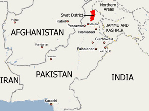

Welcome
I'am Malala
I defied the Taliban in Pakistan and demanded that girls be allowed to receive an education. Was shot in the head by a Taliban gunman in 2012, but survived !
Where I'm from

My Curriculum
Born on 12 July 1997 in Pakistan’s Swat Valley
- 2008 - First speech at the local press club in Peshawar. The speech is titled “How dare the Taliban take away my basic right to education?”
- 2009 - Blogs for the BBC under the name Gul Makai. Contributes to the show Capital Talk. Use the show to speak out against the Taliban’s decision to prevent women from accessing education.
- 2011- Winner for International Children’s Peace Prize at age 13
- 2012- Attacked by the Taliban
- 2013- UN speech. Releas of "I am Malala: The Girl Who Stood Up for Education and Was Shot by the Taliban"
Malala Fund, founded.
- 2014- Awarded Nobel Prize for Peace
- 2015- Today - Womans rights acctivist. Attends to university in Britan with high grades.
Ziauddin Yousafzai my inspiration